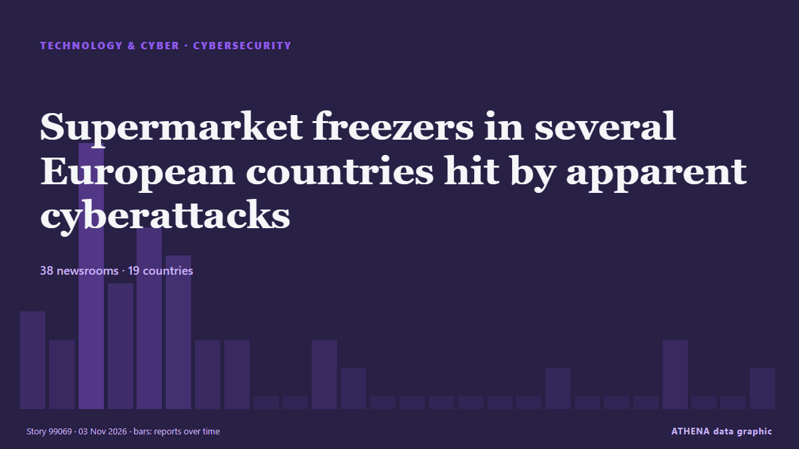

Technologie, KI und Cybersicherheit
GesponsertPräsentiert von  Cybernetics and Artificial Intelligence Lab Welcome to the Cybernetics and Artificial Intelligence Laboratory, established at the Department of Business Administration of the National and Kapodistrian University of Athens. The lab is headed by Professor Dimitrios Thomakos. The lab aims to do research that can be published in top venues. Our research uses tools and methods of Artificial Intelligence, and lies in the following areas: - Forecasting - Decision making - Cyber security - Finance We are always looking forward to collaborating with exceptional students!
Cybernetics and Artificial Intelligence Lab Welcome to the Cybernetics and Artificial Intelligence Laboratory, established at the Department of Business Administration of the National and Kapodistrian University of Athens. The lab is headed by Professor Dimitrios Thomakos. The lab aims to do research that can be published in top venues. Our research uses tools and methods of Artificial Intelligence, and lies in the following areas: - Forecasting - Decision making - Cyber security - Finance We are always looking forward to collaborating with exceptional students!
Schlagzeilen werden auf Englisch angezeigt, wie veröffentlicht.

CybersicherheitSupermarket freezers in several European countries hit by apparent cyberattacks
Supermarkets in Sweden, Belgium, Luxembourg, Ireland and Estonia were hit Monday by problems with freezers and fridges that apparently were caused by cyberattacks, forcing some to dispose of ruined… von The Canadian Press (via CityNews)
| 21. Okt. | 31 |
|---|---|
| 22. Okt. | 57 |
| 23. Okt. | 55 |
| 24. Okt. | 21 |
| 25. Okt. | 26 |
| 26. Okt. | 77 |
| 27. Okt. | 84 |
| 28. Okt. | 88 |
| 29. Okt. | 89 |
| 30. Okt. | 80 |
| 31. Okt. | 33 |
| 1. Nov. | 46 |
| 2. Nov. | 80 |
| 3. Nov. | 41 |
Google's use of press by AI chatbot may infringe copyright rules, EU court adviser says
Google's Gemini AI may violate copyright rules when it uses publishers' content to generate answers, an EU court adviser said, while distinguishing that use from AI training. von The Jerusalem Post
Europe on alert after supermarket freezers hit by cyber-attacks in 10 countries
Supermarkets have reported problems from Estonia and Sweden to Portugal and Italy and many retainers have been forced to discard food. von BBC News
Hackers hit Ukraine, Russia's emergency apps, send fake nuclear, chemical attack alerts
All-clear messages were sent shortly afterward for each alert, and Ukraine's Ministry for Digital Transformation said the app had been temporarily suspended. von The Jerusalem Post
UK Cyber Chief Says the UK Will Face AI Cyberattacks on Critical Infrastructure by 2028
Britain’s cyber chief says the U.K. is likely to face artificial intelligence cyberattacks on its critical infrastructure by 2028. von The Independent
Drax and Brookfield strike investment deal of up to £20bn for data centre
The group initially hopes to have a roughly 100MW centre operating from the first quarter of 2028. von Evening Standard (London)
Jack Grealish not expected to return for Everton at Newcastle after breach of club discipline
Everton midfielder Jack Grealish was dropped for Thursday night’s 3-1 Carabao Cup victory over Newcastle United due to a breach of club discipline. von Liverpool Echo
Africa: Six in Seven Journalist Murders Go Unpunished, Unesco Reports
[UN News] Global impunity for journalist killings has risen for the first time in more than a decade, while the growing use of drones is an emerging threat for reporters in conflict zones, according… von AllAfrica
Germany Says Lawmakers’ Phones May Be Hacked By Spyware
Apple sent threat alerts to German MPs and officials, and Berlin says affected iPhones should be treated as compromised in a suspected state-backed attack. von to vima
South Korea Investigates Online Leak of President's Passport Details
Personal information of 168 people, including Lee Jae Myung, posted on website. von Anadolu Agency (English)
Anthropic Reports $17 Billion Quarterly Revenue Ahead of IPO
Anthropic’s revenue reached $17 billion for the three months ended Sept. von PYMNTS
South Korea to double spending on AI and chips in 2027
The country is a tech powerhouse home to Samsung Electronics and SK hynix, two of the world's three biggest makers of memory chips. von Free Malaysia Today
AI models mostly smarter than top scientists, OpenAI's Altman says
CEO says AI models capable of performing white-collar work but people must 'remain in control of the future' von Express Tribune
Donald Trump backs Nvidia's Jensen Huang amid Chinese spy plot probe
Nvidia CEO Jensen Huang warned that Europe risks falling further behind the US and China in artificial intelligence, despite its industrial base and technical talent. von DigiTimes Asia
British adventurer completes 28-year, 50,000km walk home
A 57-year-old British adventurer, Karl Bushby, has returned home after completing a remarkable 28-year, 50,000-kilometre journey on foot across four continents without using any form of transport to… von Vanguard
Merz says next German president 'must be a woman' — report
German President Frank-Walter Steinmeier's second term is due to end in March next year. von DW English
(LEAD) Lee orders review for establishment of cybersecurity task force
SEOUL, Nov. 3 (Yonhap) -- President Lee Jae Myung on Tuesday instructed official... von Yonhap (English)
Russian bomb attack on aid centre kills 26, says Ukraine
Russia bombed an aid distribution centre and neighbouring shelter in southern Ukraine, killing 26 people, Ukraine's emergency services agency said. von RTÉ News
Fridge cyberattack hits supermarkets across Europe
Grocery stores in at least five European countries saw temperatures in their cold cases soar on Monday, with several confirming they had been hit by a cyberattack similar to one three weeks ago in… von Dawn
Oracle taps investors for US$20bil to finance AI expansion
NEW YORK: Oracle plans to raise US$20 billion through bond and share sales, regulatory filings showed on Monday, as the software giant taps investors to fund its costly AI and cloud infrastructure… von New Straits Times
ClassNK updates ship cyber security guidelines to simplify compliance
ClassNK has released the second edition of its Guidelines for Cyber Security Management System for Ships, introducing clearer audit requirements and closer alignment with international cyber security… von Container News
Fridge cyberattack hits supermarkets across Europe
STOCKHOLM: Grocery stores in at least seven European countries saw temperatures in their cold cases soar on Monday, with several confirming they had been hit by a cyberattack similar to one three… von New Straits Times
Ukrainian air raid alert app sends false warnings after being hacked
The app has sent Ukrainians false warnings that some areas of the country face nuclear and chemical threats. von ABC News Australia
HSBC to open Hong Kong AI Institute following Singapore launch
The AI unit will work with Hong Kong University of Science and Technology as its anchor academic partner, although the bank's CEO Georges Elhedery did not disclose headcount details. von CNA (Channel NewsAsia)
Harry Styles & HeadCount Drive Major Voter Action During His MSG Residency: See the Numbers
"Harry's fans arrive ready to make their voices heard," HeadCount's executive director said. von Billboard
Elon Musk says 'unsustainably high' costs are the reason for Grok Bot usage limits
The SpaceX CEO said the cost of serving the AI agent was "unsustainably high relative to revenue," after some users complained about usage limits. von Business Insider
Mali and Its Neighbours in the Sahel Explained 2026
How Mali deals with Burkina Faso, Niger, Algeria, Senegal and others, from the AES bloc to fuel routes, rivers and refugees. von The Rio Times
Chainalysis discloses data breach from "offensive agentic techniques"
Blockchain analytics firm Chainalysis disclosed a data breach after attackers used "offensive agentic techniques" to access internal systems and tools, exposing customer names, email addresses, user… von BleepingComputer
Malicious Claude Code extension on Cursor planted SSH backdoors
A malicious version of Anthropic's Claude Code VS Code extension was distributed through Cursor's extension marketplace for approximately 11 hours on October 29, exposing up to 5,000 developers to… von BleepingComputer
(LEAD) Lee vows bold investment in AI, future growth engines to boost growth potential
SEOUL, Nov. 2 (Yonhap) -- President Lee Jae Myung on Monday pledged bold investm... von Yonhap (English)
(2nd LD) S. Korea's monthly exports hit US$115.3 bln in Oct. on strong chip sales
SEOUL, Nov. 1 (Yonhap) -- South Korea's exports jumped 93.7 percent to a record ... von Yonhap (English)
Asia shares bend under AI stress; Apple earnings loom
SYDNEY: Asian share markets slipped on Monday as worries about the sustainability of the artificial intelligence (AI) investment boom loomed over the tech sector, while the high price of oil limited… von New Straits Times
OpenAI Cuts Funding Target by $10 Billion as Investor Jitters Shake AI Markets
OpenAI has cut the target for its current funding round from $30 billion to $20 billion amid investor concerns about the artificial intelligence market, The Financial Times reported Friday (Oct. von PYMNTS
‘Air-con nation’ Singapore eyes alternatives to cool down
Some buildings in the city-state are exploring active chilled beams and radiant cooling to replace compressor units that release hot air into the environment. von Free Malaysia Today